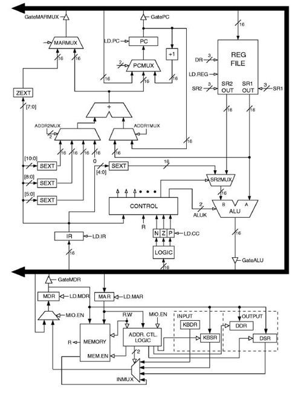

LC3-b Computer Architecture Simulator

About:
- Full pipeline simulator in C++ for the LC-3b computer’s architecture and micro- architecture
- Written in C++
- Including interrupt and exceptions handling.
GitHub Repo
LC3-b Computer Architecture Simulator GitHub Repo